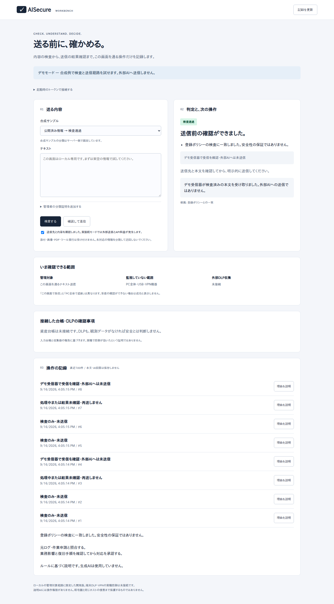

入力
この内容をAIへ送ってよいですか？機密区分を確認する必要があります。AI SECURITY / OPEN SOURCE
AIに渡す前に、
確かめる。
送る内容と送信先を、実行前に確認。止めた理由と、その後の記録まで残します。
開発版。デモは外部AIへ送信しません。実運用では、管理対象の送信経路への組み込みが必要です。
ACTUAL WORKBENCHLOCAL / DEMO MODE

SIGNATURE MOMENT / PREFLIGHT
送る前に、ここで判断します。
合成例。実際の判定ロジックで、入力から結果までを一度だけ見せます。
検査
ポリシーと分類を照合機密または持出禁止の分類を確認。PG-002 / BLOCK
この送信は拒否機密または持出禁止の分類です。RESULT送信処理は未実行
not_executed01 / CHECK
送る前に、確認する。
入力した内容をポリシーに基づいて検査。送信先・操作・分類の条件が一致するかを確かめます。
02 / REASON
止めた理由が、わかる。
単に「危険」と言うのではなく、判定に使ったルールと、まだ確認できていないことを分けて表示します。
EV-101 / PREFLIGHT拒否
顧客情報の外部送信を拒否
機密または持出禁止の分類です。この外部送信経路では実行を拒否します。
- 操作
- ai.prompt
- データ分類
- confidential
- 判定根拠
- PG-002
not_executed03 / TRACE
過去の履歴も、調べる。
送信要求、結果未確認、デモ受信などを時系列で確認。何が起きたかと、まだ分からないことを混同しません。
REAL RULE OUTPUT
4つの判定例を、実際のルールで。
機密情報、分類不明、公開情報、削除操作。表示結果は同梱のPythonガードが合成入力から計算したものです。
拒否保留検査通過
EV-101 / PREFLIGHT拒否
顧客情報の外部送信を拒否
なぜ、この判定になったか
機密または持出禁止の分類です。この外部送信経路では実行を拒否します。
技術的な判定根拠
- 操作
- ai.prompt
- データ分類
- confidential
- 判定根拠
- PG-002
検査のみ・送信処理は未実行 not_executed
EV-102 / PREFLIGHT保留
分類が分かるまで送信を保留
なぜ、この判定になったか
データ分類が未確認です。安全と判断せず、実行を保留します。
技術的な判定根拠
- 操作
- ai.prompt
- データ分類
- unknown
- 判定根拠
- PG-004
検査のみ・送信処理は未実行 not_executed
EV-103 / PREFLIGHT検査通過
公開情報のポリシー検査を通過
なぜ、この判定になったか
登録ポリシーの検査に一致しました。安全性の保証ではありません。
技術的な判定根拠
- 操作
- ai.prompt
- データ分類
- public
- 判定根拠
- —
検査のみ・送信処理は未実行 not_executed
EV-104 / PREFLIGHT保留
削除には別の承認経路が必要
なぜ、この判定になったか
実行・削除・共有・送信の操作には別の認証済み承認経路が必要です。
技術的な判定根拠
- 操作
- agent.delete
- データ分類
- public
- 判定根拠
- PG-005
検査のみ・送信処理は未実行 not_executed
この公開ページで実データを検査・送信することはありません。 判定データを見る ↗
THE ACTUAL WORKBENCH
すべてを、この1つの画面で。
送信内容の検査、判定理由、監視範囲、操作履歴まで。デモモードでは外部AIへ送信せず、手元で流れを確認できます。
ワークベンチを起動する →18-SECOND PRODUCT CONCEPT
動きは、説明のためだけに。
紹介映像は、送信前に検査して結果を見る流れだけを短く示します。実機の操作・防御実績を示す映像ではありません。
映像の内容を読む
AIに送る情報と送信先を確認し、機密ラベルがある入力の送信を拒否する判定例を紹介します。最後に、判定の根拠と未確認のことを分けて表示します。
SCOPE / NO OVERCLAIMS
できることと、未確認の範囲。
AISecureは、管理対象の送信前チェックと記録を助ける開発版です。組織全体のセキュリティ対策を置き換えるものではありません。
実装範囲と防御要件 ↗確認できること
- 登録ポリシーに基づくテキスト送信の事前判定
- 判定理由とルールIDの表示
- 操作履歴と結果状態の確認
- 合成データでのデモ受信確認
まだ確認していない範囲
- すべての個人情報・機密情報の完全な検出
- 端末全体のDLPやUSB・別プロセスの制御
- VPN機器の修正・隔離を含む本番運用
- 第三者によるセキュリティ認証
git clone https://github.com/FORIFOR/AISecure.git cd AISecure python3 -m venv .venv . .venv/bin/activate python -m pip install '.[workbench]' python -m aisecure.workbench --demo
GOOD QUESTIONS
誤解しやすいところだけ。
入れるだけでPCやVPN全体を守れますか？
いいえ。管理対象の送信経路に組み込む必要があります。端末DLPやVPN隔離の本番連携は別途必要です。
生成AIが安全かどうかを決めますか？
標準の判定はルールに基づきます。任意のローカルAIは補助説明のみで、判定や実行権限を持ちません。
公開ページへ実ログを入れられますか？
入れないでください。公開ページは製品紹介と合成データの判定例だけです。実ログは許可された環境でローカルに扱ってください。
事業・導入の相談 · AISecure
自社のAI利用で、確かめたいことは？
対象システムと確認したい課題をお聞かせください。実ログ・機密情報・認証情報は送信しないでください。
提供可否・範囲・納期・料金は個別に確認します。送信による契約や課金はありません。